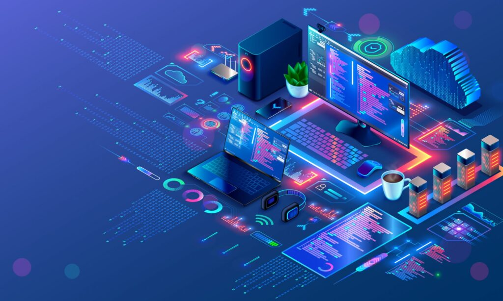

Ingeniero Frontend
Se encarga de transformar diseños visuales en código interactivo ejecutable en navegadores web.
HTML, CSS, JavaScript, React Recursos en MDN →
Explora desde las primeras computadoras hasta las arquitecturas modernas en la nube y la inteligencia artificial.
Selecciona una era para explorar los hitos clave de la computación:
La programación se realizaba cambiando conexiones de cables e interruptores manuales en máquinas como la ENIAC. Ada Lovelace fue la primera pionera en escribir un algoritmo estructurado para una máquina analítica.
Se crearon lenguajes legibles por humanos como FORTRAN, COBOL y C. En 1968 se celebró la Conferencia NATO, donde se acuñó oficialmente el término "Ingeniería de Software" para afrontar la complejidad del desarrollo.
Con la llegada de MS-DOS, Windows y la Web, la programación pasó de las computadoras centrales a millones de hogares. Nacieron lenguajes como HTML, CSS, JavaScript, Java y Python.
El software actual se despliega dinámicamente en servidores en la nube (AWS, Azure) usando contenedores como Docker y modelos avanzados de aprendizaje automático.
Formas en que los equipos organizan sus proyectos de software:
Enfoque tradicional donde las etapas (requisitos, diseño, código, pruebas) se ejecutan una después de la otra de forma lineal.
Desarrollo iterativo que entrega funcionalidades en ciclos cortos (sprints de 2 a 4 semanas), permitiendo adaptarse a cambios rápido.
Integración continua de código e integración de equipos de desarrollo con operaciones para automatizar despliegues de software.
Herramientas esenciales en el ecosistema informático actual:
Selecciona tu área de interés principal para recibir una recomendación:
Se encarga de transformar diseños visuales en código interactivo ejecutable en navegadores web.
HTML, CSS, JavaScript, React Recursos en MDN →
Especialista en estructurar bases de datos, APIs de comunicación y la lógica interna de la aplicación.
Python, Node.js, SQL, Java Documentación →
Analiza vulnerabilidades en el código, gestiona permisos de infraestructura y previene ataques maliciosos.
Hacking Ético, Linux, Redes Más información →
Construye modelos predictivos y algoritmos de Machine Learning utilizando estadística e ingeniería de software.
Python, R, TensorFlow, Pandas Comunidad Kaggle →